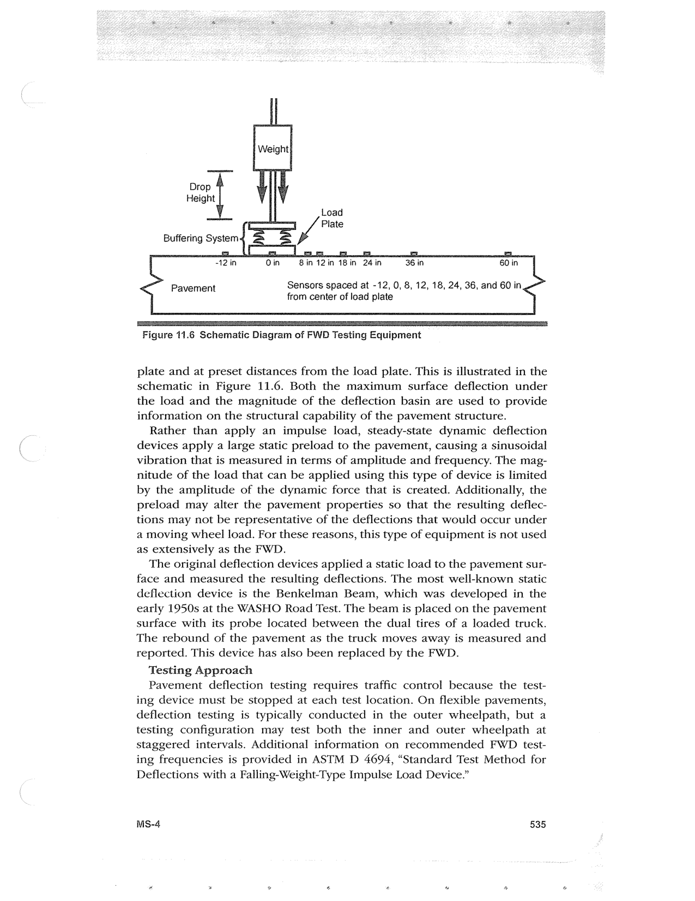

PDF page 569 · book page sequence 535


Searchable transcription
Unproofread OCR · 358 detected words; mean OCR confidence 93.46. Check technical values, symbols and table columns against the scan.
Drop
Height
Load
—=] Plate Buffering System Ea [-e—I EF. Es. ba i. -12 in 8in 12in 18 in 24 in 36 in 60 in Pavement Sensors spaced at -12, 0, 8, 12, 18, 24, 36, and 60 in < from center of load plate
Figure 11.6 Schematic Diagram of FWD Testing Equipment
plate and at preset distances from the load plate. This is illustrated in the schematic in Figure 11.6. Both the maximum surface deflection under the load and the magnitude of the deflection basin are used to provide information on the structural capability of the pavement structure.
Rather than apply an impulse load, steady-state dynamic deflection devices apply a large static preload to the pavement, causing a sinusoidal vibration that is measured in terms of amplitude and frequency. The mag- nitude of the load that can be applied using this type of device is limited by the amplitude of the dynamic force that is created. Additionally, the preload may alter the pavement properties so that the resulting deflec- tions may not be representative of the deflections that would occur under a moving wheel load. For these reasons, this type of equipment is not used as extensively as the FWD.
The original deflection devices applied a static load to the pavement sur- face and measured the resulting deflections. The most well-known static deflection device is the Benkelman Beam, which was developed in the early 1950s at the WASHO Road Test. The beam is placed on the pavement surface with its probe located between the dual tires of a loaded truck. The rebound of the pavement as the truck moves away is measured and reported. This device has also been replaced by the FWD.
Testing Approach
Pavement deflection testing requires traffic control because the test- ing device must be stopped at each test location. On flexible pavements, deflection testing is typically conducted in the outer wheelpath, but a testing configuration may test both the inner and outer wheelpath at staggered intervals. Additional information on recommended FWD test- ing frequencies is provided in ASTM D 4694, “Standard Test Method for Deflections with a Falling-Weight-Type Impulse Load Device.”
MS-4 535